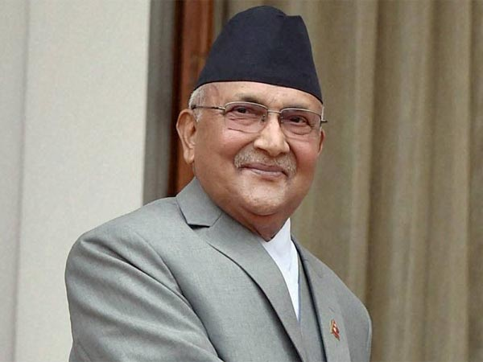

Khadga Prasad Sharma Oli (Nepali: खड्गप्रसाद ओली, pronounced [kʰʌɖɡʌ ˈprʌsaːd oːli]; born 22 February 1952), more commonly known as KP Sharma Oli, is a Nepalese politician and the current Prime Minister of Nepal.
Oli previously served as prime minister from 11 October 2015 to 3 August 2016 and was the first elected prime minister under the newly adopted Constitution of Nepal.[4]